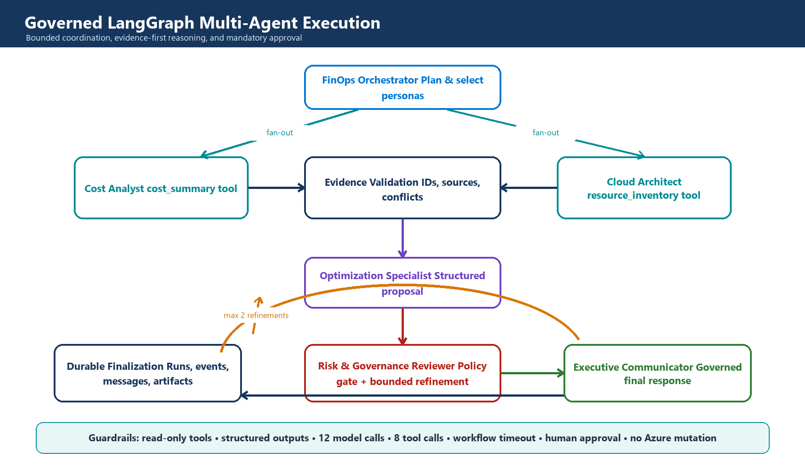
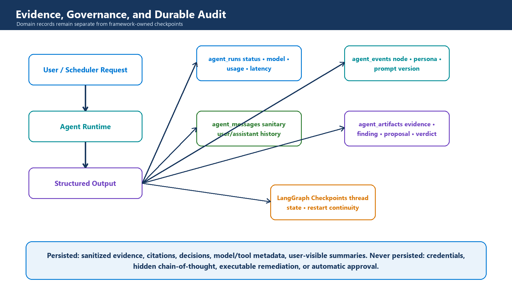

How modular boundaries, time-series data, specialized AI personas, and human governance turn cloud cost data into an extensible engineering platform
Contents

High-level architecture: evidence flows inward; governed decisions flow outward.
The short version Treat AI as a reasoning layer over trusted FinOps evidence — not as the database, calculator, policy engine, or cloud executor. The interesting engineering decision is not where to call the model, but which responsibilities must stay deterministic and where probabilistic reasoning actually adds value. |
Why a cost dashboard becomes an architecture problem
Cloud cost platforms begin simply: ingest billing data, calculate totals, and draw a dashboard. The complexity arrives later, when users start asking higher-order questions — why did spend move, which resource is responsible, whether a recommendation is safe to act on, and who should approve it. Those questions don't stay inside one layer. They cross data, architecture, risk, and communication boundaries at once.
A single service can answer all of them for a prototype. At scale that design produces hidden coupling: collection code starts knowing about dashboard schemas, AI prompts start knowing about database tables, schedulers accumulate business rules, and every provider change forces a cross-cutting rewrite. Nothing has a narrow contract, so nothing is easy to test in isolation.
The design in this platform starts from boundaries, not technology choices. Collection produces canonical evidence. Domain services calculate financial facts. Agents coordinate investigation. Governance evaluates proposals. APIs and dashboards present outcomes. Infrastructure exists to make those modules repeatable and observable — nothing more.
| Architectural concern | Decision |
|---|---|
| Financial correctness | Keep totals, budgets, forecasts, and reference savings deterministic and testable. |
| Ambiguous investigation | Use specialized agents to select evidence, reconcile findings, and explain trade-offs. |
| Operational safety | Make tools read-only and require human approval for every proposal. |
| Evolution | Connect modules through typed contracts and repositories rather than implementation details. |
A modular core keeps change local
A senior architecture optimizes for the cost of the next change, not just the first release. In this platform, ownership is split along the lines a team would actually need to change independently: Azure integration owns authentication and API translation; the monitoring domain owns costs, budgets, and forecasts; the agent runtime owns planning, evidence requests, and governance; persistence owns repository contracts and audit; the API layer owns transport and response contracts; observability owns metrics and dashboards. Each of those maps directly onto a top-level package in the repository (src/collection, src/monitoring, src/agents, and so on), so the module boundary on paper is the same one enforced by the import graph.
| Module | Owns | Can change without rewriting |
|---|---|---|
| Azure integration | Authentication and provider API translation | Domain logic, agents, dashboards |
| Monitoring domain | Costs, budgets, alerts, forecasts, recommendations | Cloud SDKs and model providers |
| Agent runtime | Planning, evidence requests, governance, communication | SQL schemas and Azure credentials |
| Persistence | Repository contracts, migrations, checkpoints, audit | API presentation and prompts |
| API and CLI | Transport, authentication context, response contracts | Collection and graph internals |
| Observability | Metrics, health, dashboards | Business workflows |
The pattern that actually enforces this is dependency direction. Business and agent code depend on interfaces — cost repositories, inventory tools, model factories — not on concrete SDK calls. Provider-specific details sit at the edge. That's what makes it possible to swap Azure OpenAI for an OpenAI-compatible endpoint, replace PostgreSQL with another repository implementation, or present through something other than Grafana without touching the reasoning model at all.
Design heuristic If a model prompt contains SQL, a dashboard contains business rules, or a scheduler contains provider credentials, a boundary is probably missing. |
Why PostgreSQL plus TimescaleDB
Cost data is relational in meaning and time-series in access pattern.
Azure cost records have dimensions — subscription, service, resource, region, tags, currency — and a time axis. Most real queries combine both: monthly spend by service, daily trend for a subscription, latest forecast versus budget, or cost before and after a recommendation. A general document store makes those relationships and aggregations harder to express; a metrics-only store is weak for transactions, joins, approvals, and audit records — all things this platform needs on the same data.
| Option | Strength | Why it was, or wasn't, chosen |
|---|---|---|
| PostgreSQL | Transactions, joins, constraints, mature tooling | Chosen as the canonical system of record. |
| TimescaleDB extension | Time partitioning and time-oriented aggregation | Chosen to optimize cost history without introducing another database. |
| Dedicated metrics store | High-volume telemetry | Used for Prometheus metrics, not financial records or audit state. |
| Document database | Flexible documents | Not selected — financial dimensions, joins, and governance records benefit from explicit schemas. |
| Data warehouse | Large analytical workloads | A future option once multi-year, multi-tenant scale exceeds the operational database boundary. |
This is a deliberately reversible choice. SQLAlchemy repositories isolate the application from storage details, and Alembic gives schema evolution an explicit lifecycle. If scale later requires a warehouse or lakehouse, ingestion can fan out to it without forcing the API and agent layers to understand the migration.
Why LangGraph instead of a chain of prompts
Coordination needs state, branching, fan-out, retries, budgets, and durable checkpoints.

The graph selects specialists, validates evidence, governs proposals, and permits only bounded refinement.
A prompt chain works when every request follows the same path. FinOps investigations don't. A budget question may need only cost evidence. A rightsizing question needs inventory and architecture context too. A high-risk proposal may need a refinement round; a simple explanation doesn't. A graph makes those different routes explicit and, importantly, testable in isolation from each other.
LangGraph was chosen because it models conditional execution and durable state directly, rather than as something bolted on top of a linear chain. Parallel specialists reduce latency, reducers define exactly how evidence merges back together, checkpoints support continuity across a conversation, and node boundaries create natural observability points. The trade-off is real — more state design and dependency management than a simple chain — and it's only justified because the workflow genuinely branches and persists.
The routing logic is ordinary code, not prompt instructions the model could ignore. The orchestrator's plan produces a list of selected personas; a routing function filters that list against the personas actually allowed to produce evidence, then fans out one graph branch per persona:
EVIDENCE_PERSONAS = frozenset({"cost_analyst", "cloud_architect"}) def _route_specialists(state: AgentState) -> list[Send]: selected = state.get("selected_personas", []) allowed = [name for name in selected if name in EVIDENCE_PERSONAS] if not allowed: allowed = ["cost_analyst"] return [Send("evidence_specialist", _specialist_input(state, name)) for name in allowed] |
src/agents/graph.py — the model proposes personas; this function decides which ones are actually allowed to run.
After governance, the same pattern repeats in reverse: a verdict can request refinement from specific personas, but only up to a fixed round limit, and only for personas on the evidence allow-list — so a model can't argue its way into an unbounded loop:
def _route_after_governance(state: AgentState, max_refinement_rounds: int): verdict = state.get("governance_verdict", {}) requested = [ name for name in verdict.get("refinement_personas", []) if name in EVIDENCE_PERSONAS ] if requested and state.get("refinement_count", 0) < max_refinement_rounds: return [Send("evidence_specialist", _specialist_input(state, name, refinement=True)) for name in requested] return "communicate" |
src/agents/graph.py — refinement is bounded in code (max_refinement_rounds), not by asking the model politely to stop.
Personas are selected by evidence need — not by job-title theatre
More agents are not automatically better. Each persona must own a distinct decision boundary.
| When the request needs... | Persona selected | Why |
|---|---|---|
| Intent classification and a bounded plan | FinOps Orchestrator | Keeps routing separate from specialist conclusions. |
| Spend trend, top services, or cost concentration | Cost Analyst | Has access only to canonical cost-summary evidence. |
| Resource shape, region, inventory, or architecture context | Cloud Architect | Adds technical context without calculating financial truth. |
| A concrete action assembled from verified findings | Optimization Specialist | Separates evidence collection from recommendation synthesis. |
| Risk, conflicts, uncertainty, or policy review | Risk & Governance Reviewer | Creates an independent gate before communication. |
| A decision-ready summary | Executive Communicator | Changes presentation, not evidence or approval state. |
The orchestrator doesn't call every persona by default — it selects the minimum evidence-producing specialists the question actually requires. The optimizer and governance reviewer are mandatory only for proposal workflows. The communicator runs after governance, deliberately, so that polished language can never be used to route around the control point.
Each persona is also a narrow, versioned contract rather than a personality. A persona's system prompt, prompt version, and — critically — its allowed tool list are declared once as data, not re-derived from a role description scattered across prompts:
@dataclass(frozen=True) class PersonaContract: name: str prompt_id: str prompt_version: str system_prompt: str allowed_tools: tuple[str, ...] PERSONAS = { "cost_analyst": PersonaContract( "cost_analyst", "cost-analyst", "1.0.0", f"Analyze spend, trends, recommendations, and anomalies " f"without inventing values. {_COMMON}", ("cost_summary",), ), "optimization_specialist": PersonaContract( "optimization_specialist", "optimization-specialist", "1.0.0", f"Turn verified findings into prioritized proposals " f"without changing deterministic savings. {_COMMON}", (), ), # ... } |
src/agents/personas/contracts.py — the Cost Analyst's allowed_tools is a one-item tuple. It cannot ask for inventory data even if the model wants it to.
A new persona earns its place when it needs a distinct contract, evidence source, policy, or evaluation suite — not merely because another title sounds plausible. That rule keeps orchestration understandable and avoids token-heavy agent debates that produce no additional evidence.
Extension example A Sustainability Analyst can be added later by registering carbon-intensity evidence, defining a narrow output contract, and adding one graph route — without changing cost collection or existing personas. |
Tools are the anti-coupling layer between AI and infrastructure
The model asks for evidence; application code decides whether and how that evidence may be retrieved.
Agents never receive database connections or Azure credentials. They receive schemas for allow-listed tools such as cost_summary and resource_inventory. Underneath, a registry validates arguments, checks persona authorization, applies timeouts, executes read-only code, and returns timestamped evidence IDs — none of which the model can see or influence.
The authorization check is two conditions, enforced in code before a tool ever runs: the tool has to be read-only, and the calling persona has to be explicitly granted access to it. Neither is a prompt instruction the model could talk its way around:
class ToolPolicy: grants: dict[str, frozenset[str]] def authorize(self, persona: str, tool: AgentTool) -> None: if not tool.read_only: raise ToolPolicyError(f"Tool is not read-only: {tool.name}") if tool.name not in self.grants.get(persona, frozenset()): raise ToolPolicyError(f"Persona {persona} may not invoke {tool.name}") |
src/agents/tools/registry.py — every tool call passes through this before it touches real data.
This indirection is what makes the rest of the system cheap to change. Prompts can evolve without changing data access. Storage can evolve without changing prompts. Security policy stays enforceable in code instead of being expressed as a sentence the model may or may not follow. And it creates a clean extension seam: adding a capability means adding a tool adapter and an evidence contract, not teaching every persona about a new backend.
Governance is part of the graph, not a disclaimer
A recommendation is useful only when its evidence, uncertainty, risk, and approval status travel with it.

Product audit records remain separate from framework checkpoint state.
The proposal schema doesn't just recommend human approval in a comment — it makes a proposal impossible to construct without it. requires_human_approval is typed as Literal[True], so there's no valid instance of the object where that flag is false:
class Proposal(BaseModel): title: str recommendation: str evidence_ids: list[str] = Field(min_length=1) potential_monthly_savings: float | None = Field(default=None, ge=0) confidence: float = Field(ge=0, le=1) risks: list[str] = Field(default_factory=list) requires_human_approval: Literal[True] = True class GovernanceVerdict(BaseModel): approved_for_proposal: bool requires_human_approval: Literal[True] = True concerns: list[str] = Field(default_factory=list) refinement_personas: list[str] = Field(default_factory=list) |
src/agents/state.py — a Proposal also can't exist with zero evidence_ids, thanks to min_length=1.
Governance can accept a proposal for presentation, reject it, or ask for a bounded refinement — it cannot execute remediation, because nothing in the schema or the graph gives it a path to do so. The runtime separately limits model calls, tool calls, refinement rounds, and total duration before execution ever begins.
Four domain tables capture runs, events, messages, and artifacts. LangGraph owns its own, separate checkpoint tables for workflow continuation. That separation matters operationally: the business audit model can stay stable even if the orchestration library changes underneath it, because product APIs were never coupled to framework internals in the first place.
| Persist | Do not persist |
|---|---|
| Evidence IDs, sources, timestamps, findings, proposals, verdicts, model/tool metadata | Credentials, raw secrets, hidden chain-of-thought, executable remediation |
| Actor scope, workflow status, latency, prompt version, safe errors | Provider stack traces or unbounded raw observations |
Why Docker Compose for the reference deployment
The goal here is a reproducible architecture boundary, not a claim that Compose is the final production platform. The reference stack packages PostgreSQL/TimescaleDB, a one-shot migration job, FastAPI, a scheduler worker, Prometheus, and Grafana. Health-gated dependencies make startup deterministic, and sharing one application image across the API, migration, and worker processes keeps them from drifting apart.
Compose is the right choice for local development, demonstrations, and integration tests, because it exposes service contracts without adding orchestrator complexity on top. Production can move to managed PostgreSQL, Container Apps or Kubernetes, Key Vault, Managed Identity, and managed observability — the application modules don't need to change, because deployment concerns were kept outside them from the start.
How the architecture extends
Extension is meant to mean adding a module or an adapter — not editing every layer to accommodate one new requirement.
| Future requirement | Extension seam |
|---|---|
| Another LLM provider | Implement the shared model factory contract and configuration validation. |
| New cloud or billing source | Add an integration adapter that emits canonical cost/inventory evidence. |
| New specialist persona | Define a persona contract, structured output, allowed tools, and graph route. |
| New evidence source | Register a read-only tool with Pydantic input/output and evidence metadata. |
| Warehouse analytics | Fan out normalized records or replace the repository implementation. |
| Different UI | Consume versioned APIs and artifact provenance; no graph rewrite is required. |
| Approval workflow | Add a domain lifecycle around proposal artifacts without coupling approval to cloud execution. |
| Safe remediation | Introduce a separate least-privilege executor, dry-run, rollback, and separation of duties. |
That last row is intentionally not implemented. Advisory intelligence and cloud mutation have different threat models, and combining them early would increase blast radius and make human approval ambiguous. A mature architecture earns autonomy only after evidence quality, evaluation, identity, rollback, and operational ownership are proven — not before.
What I would measure next
None of the following is instrumented yet — this platform is advisory-by-default and still early. But architecture quality should eventually become visible through system behavior, not only through diagrams, so this is the scorecard I'd want to build against:
Evidence coverage: percentage of claims with valid, current evidence IDs.
Governance quality: rejection and refinement rates by proposal type.
Cost and latency: model/tool calls and end-to-end duration per workflow.
Reliability: node failures, checkpoint resumes, timeouts, and provider fallback rates.
Decision value: accepted proposals, validated savings, and time from insight to approval.
Safety: unauthorized tool attempts, cross-actor access failures, and zero mutation events.
Closing perspective
The most important AI decisions here turned out to be conventional software-engineering decisions. The platform became extensible not because it uses six personas, but because each responsibility got a narrow boundary. Time-series financial data lives in a transactional system designed for its access pattern. Models operate through application-owned tools. Graph state is explicit. Governance is executable policy — enforced by the type system, not a prompt. Audit data is a product contract. Deployment and delivery are repeatable.
That framing changes the role of AI in the system. The model is no longer an all-knowing service hidden behind one endpoint — it's one replaceable reasoning dependency inside a system that controls evidence, authority, state, cost, and failure. That's the difference between adding an LLM feature and engineering an AI platform.
Architecture takeaway Build deterministic foundations, expose narrow evidence contracts, add the minimum specialized reasoning roles, and make every autonomous step bounded and observable. |
Explore the implementation
The complete source, architecture documentation, tests, Docker environment, dashboards, and release workflow are available in the public repository:
GitHub repository → github.com/nk2242696/CostMonitoringMultiAgent
| Project | Azure Cost Monitoring Multi-Agent Platform |
|---|---|
| Architecture | Modular Python, FastAPI, LangGraph, PostgreSQL/TimescaleDB, Prometheus, Grafana |
| Operating model | Read-only investigation and human-approved proposals |
| Deployment | Docker-first reference stack with semantic release automation |
| Author | Nikhil Kumar |